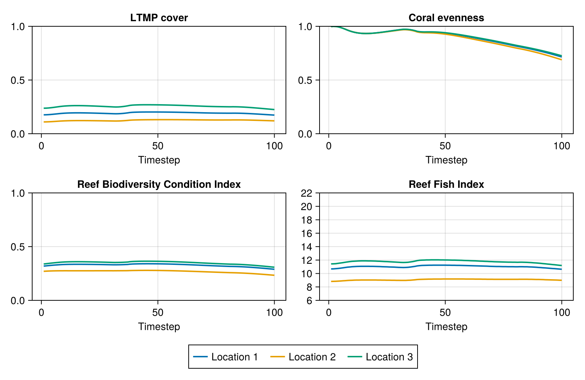

Cookbook
This page contains worked examples of applying ADRIAIndicators to the output of distinct coral ecological models: CoralBlox.jl and ReefMod Engine (via ReefModEngine.jl). Models differ in the units they report, the order of their array dimensions and the level of detail they resolve, so model output rarely matches the input ADRIAIndicators expects (see Usage). Each example shows how to adapt a model's output to those conventions and which metrics can be calculated from it, and can be used as a starting point for incorporating ADRIAIndicators into your own workflow.
The examples are meant to illustrate the workflow, not to describe real reefs: CoralBlox is run with synthetic, hand-picked parameter values, and ReefMod Engine with a deliberately small and short configuration, so the values they produce should not be read as ecological projections.
CoralBlox.jl
CoralBlox.jl is a standalone coral growth and mortality model, simulating coral functional groups competing for limited space over time. This example runs a small CoralBlox simulation for several locations and uses its output to calculate the cover, shelter volume, diversity, juvenile and composite index metrics provided by ADRIAIndicators.
Note: To run the following code, CoralBlox.jl should be added to the environment.
The CoralBlox parameters are mock values taken from its Quick Start, so the resulting metrics are illustrative only.
Keep in mind that CoralBlox on its own has no disturbances: cyclones, heat stress and crown-of-thorns starfish are not part of the model, so the simulated trajectories reflect only growth, mortality and competition for space.
using CoralBlox: FunctionalGroup
using CoralBlox: linear_extension_scale_factors, max_projected_cover
using CoralBlox: timestep!, coral_cover
import ADRIAIndicators as AI1. CoralBlox simulation
This follows the CoralBlox Quick Start, wrapped in a function so that it can be run for each location. CoralBlox output is absolute coral cover in m² with dimensions [timesteps ⋅ groups ⋅ sizes].
n_timesteps = 100
n_functional_groups = 3
n_size_classes = 4
# Each row contains the size class bounds of a functional group (m, as diameters)
size_class_bounds = [
0 0.05 0.8 1.4 1.5
0 0.05 0.5 0.9 1.0
0 0.05 0.5 0.9 1.0
]
# Mock initial coral cover, as a proportion of habitable area
initial_relative_cover = [
0.003 0.04 0.03 0.01
0.003 0.05 0.03 0.01
0.003 0.05 0.03 0.005
]
linear_extensions = [
0.004 0.025 0.1 0.0
0.003 0.007 0.005 0.0
0.002 0.004 0.01 0.0
]
survival_rate = [
0.6 0.9 0.95 0.95
0.6 0.92 0.95 0.95
0.6 0.92 0.96 0.96
]
recruitment_weight_per_group = [0.003, 0.008, 0.02]
"""
Run CoralBlox for a single location. Returns absolute coral cover in m² with dimensions
[timesteps ⋅ groups ⋅ sizes].
"""
function run_coralblox(habitable_area::Float64, initial_cover_scale::Float64)
C_cover = zeros(n_timesteps, n_functional_groups, n_size_classes)
C_cover[1, :, :] = initial_relative_cover .* initial_cover_scale .* habitable_area
functional_groups = FunctionalGroup.(
eachrow(size_class_bounds[:, 1:(end - 1)]),
eachrow(size_class_bounds[:, 2:end]),
eachrow(C_cover[1, :, :])
)
habitable_max_projected_cover = max_projected_cover(
linear_extensions, size_class_bounds, habitable_area
)
# Spatial competition only applies once cover exceeds this threshold
scale_threshold = 0.7 * habitable_area
for tstep in 2:n_timesteps
scale_factor = if sum(C_cover[tstep - 1, :, :]) < scale_threshold
1
else
linear_extension_scale_factors(
C_cover[tstep - 1, :, :],
habitable_area,
linear_extensions,
size_class_bounds,
habitable_max_projected_cover
)
end
growth_rate = linear_extensions .* scale_factor
# Mock recruits, for example purposes only. Recruits (m² of cover) for each
# functional group are proportional to the cover of its adults (all but the first
# size class), scaled by a group-specific recruitment weight and by an availability
# factor that decreases from 1 (no cover) to ~0.44 (full cover) as habitable area
# fills up. In reality, recruits would come from a fecundity model.
available_proportion =
(habitable_area - sum(C_cover[tstep - 1, :, :])) / habitable_area
adults_cover = dropdims(sum(C_cover[tstep - 1, :, 2:end], dims=2), dims=2)
recruitment_availability_factor = log(2.5, 1.5 + available_proportion)
recruits =
adults_cover .* recruitment_weight_per_group .* recruitment_availability_factor
timestep!(functional_groups, recruits, growth_rate, survival_rate)
coral_cover(functional_groups, @view(C_cover[tstep, :, :]))
end
return C_cover
end
# Three locations differing in area and initial cover
habitable_area_m2 = [1.0e6, 2.5e6, 1.5e6] # [locations], m²
reef_area_m2 = [1.5e6, 3.0e6, 2.0e6] # [locations], m², includes non-habitable area
initial_cover_scale = [1.0, 0.5, 1.2]
# Absolute coral cover in m² [timesteps ⋅ groups ⋅ sizes ⋅ locations]
C_cover = stack(run_coralblox.(habitable_area_m2, initial_cover_scale))2. Adapting the output to ADRIAIndicators
ADRIAIndicators expects relative cover (a proportion of habitable area) with dimensions [timesteps ⋅ groups ⋅ sizes ⋅ locations]. CoralBlox orders its dimensions as [timesteps ⋅ groups ⋅ sizes] for each location, so stacking the locations along the last dimension already matches. The only conversion needed is m² to a proportion of habitable area.
rel_cover = C_cover ./ reshape(habitable_area_m2, 1, 1, 1, :)
habitable_area_km2 = habitable_area_m2 ./ 1e63. Cover
# Relative cover, proportion of habitable area [timesteps ⋅ locations]
total_relative_cover = AI.relative_cover(rel_cover)
# Relative cover per functional group, summed across locations [timesteps ⋅ groups]
relative_taxa_cover = AI.relative_taxa_cover(rel_cover, habitable_area_m2)
# Relative cover per functional group and location [timesteps ⋅ groups ⋅ locations]
relative_loc_taxa_cover = AI.relative_loc_taxa_cover(rel_cover)
# LTMP cover is relative to the whole reef area instead of the habitable area
ltmp_cover = AI.ltmp_cover(rel_cover, habitable_area_m2, reef_area_m2)
ltmp_taxa_cover = AI.ltmp_taxa_cover(rel_cover, habitable_area_m2, reef_area_m2)
ltmp_loc_taxa_cover = AI.ltmp_loc_taxa_cover(rel_cover, habitable_area_m2, reef_area_m2)
# Absolute cover [timesteps ⋅ locations], km². Note that habitat area is given in km²
# here, whereas most other functions take areas in m².
absolute_cover_km2 = AI.absolute_coral_area(rel_cover, habitable_area_km2)
# Sanity check against CoralBlox's own absolute cover (m²)
@assert absolute_cover_km2 .* 1e6 ≈ dropdims(sum(C_cover; dims=(2, 3)); dims=(2, 3))Relative and LTMP cover can be converted into each other, given the dimension holding the locations. Metrics can also be aggregated across locations with scenario_metric.
# Convert between relative and LTMP cover, with the location in dimension 2
@assert AI.relative_cover_to_ltmp_cover(
total_relative_cover, habitable_area_m2, reef_area_m2, 2
) ≈ ltmp_cover
@assert AI.ltmp_cover_to_relative_cover(
ltmp_cover, habitable_area_m2, reef_area_m2, 2
) ≈ total_relative_cover
# Aggregate across locations [timesteps]
all_locations_relative_cover = AI.scenario_metric(
total_relative_cover, habitable_area_m2, 2
)
all_locations_absolute_cover_km2 = AI.scenario_metric(
absolute_cover_km2, habitable_area_km2, 2; is_relative=false, return_relative=false
)4. Shelter volume
Shelter volume needs a mean colony diameter for each group and size class, and the parameters of a log-log model relating colony size to shelter volume.
# Mean colony diameter in cm [groups ⋅ sizes]: size class midpoints, converted from m
colony_mean_diam_cm =
100 .* (size_class_bounds[:, 1:(end - 1)] .+ size_class_bounds[:, 2:end]) ./ 2
# Parameters of the log-log planar area model [groups ⋅ sizes ⋅ (intercept, coefficient)].
# These are illustrative values shared by all groups. In practice, use parameters
# appropriate for the morphology of each functional group.
planar_area_params = zeros(Float64, n_functional_groups, n_size_classes, 2)
planar_area_params[:, :, 1] .= -8.31 # intercept
planar_area_params[:, :, 2] .= 2.47 # coefficient
# Reference colony defining the maximum shelter volume: (diameter cm, intercept, coefficient).
# Here, the largest colony in this model.
reference = (maximum(colony_mean_diam_cm), -8.31, 2.47)
# Absolute shelter volume in m³ [timesteps ⋅ groups ⋅ sizes ⋅ locations]
asv = AI.absolute_shelter_volume(
rel_cover, colony_mean_diam_cm, planar_area_params, habitable_area_m2
)
# Relative shelter volume, dimensionless [timesteps ⋅ groups ⋅ sizes ⋅ locations]
rsv = AI.relative_shelter_volume(
rel_cover, colony_mean_diam_cm, planar_area_params, habitable_area_m2, reference
)
# Aggregate over groups and sizes -> [timesteps ⋅ locations]
total_asv_m3 = dropdims(sum(asv; dims=(2, 3)); dims=(2, 3))
total_rsv = dropdims(sum(rsv; dims=(2, 3)); dims=(2, 3))5. Diversity
Both diversity metrics take the relative cover per group and location [timesteps ⋅ groups ⋅ locations] and return [timesteps ⋅ locations].
coral_diversity = AI.coral_diversity(relative_loc_taxa_cover)
coral_evenness = AI.coral_evenness(relative_loc_taxa_cover)6. Juveniles
Juveniles are defined by which group and size class combinations count as juvenile. Here that is the first size class of every group.
# Which group and size class combinations are juvenile [groups ⋅ sizes]
is_juvenile = repeat([true, false, false, false]', n_functional_groups, 1)
# Juvenile cover relative to habitable area [timesteps ⋅ locations]
relative_juveniles = AI.relative_juveniles(rel_cover, is_juvenile)
# ... per functional group, across locations [timesteps ⋅ groups]
relative_taxa_juveniles = AI.relative_taxa_juveniles(
rel_cover, is_juvenile, habitable_area_m2
)
# ... per functional group and location [timesteps ⋅ groups ⋅ locations]
relative_loc_taxa_juveniles = AI.relative_loc_taxa_juveniles(rel_cover, is_juvenile)
# Absolute juvenile cover, in the same shapes as above
absolute_juveniles = AI.absolute_juveniles(rel_cover, is_juvenile, habitable_area_m2)
absolute_taxa_juveniles = AI.absolute_taxa_juveniles(
rel_cover, is_juvenile, habitable_area_m2
)
absolute_loc_taxa_juveniles = AI.absolute_loc_taxa_juveniles(
rel_cover, is_juvenile, habitable_area_m2
)
# Juvenile indicator [timesteps ⋅ locations]. Note that mean colony diameters are expected
# in m here, whereas the shelter volume functions above take cm.
max_juvenile_density = 15.0 # individuals/m²
juvenile_indicator = AI.juvenile_indicator(
rel_cover,
is_juvenile,
habitable_area_m2,
colony_mean_diam_cm ./ 100,
max_juvenile_density
)7. Composite indices
CoralBlox does not model rubble, so only the indices that do not need it are used here. All of them return [timesteps ⋅ locations].
reef_condition_index = AI.reef_condition_index(ltmp_cover, total_rsv, juvenile_indicator)
reef_biodiversity_condition_index = AI.reef_biodiversity_condition_index(
total_relative_cover, coral_diversity, total_rsv
)
reef_tourism_index = AI.reef_tourism_index_no_rubble(
ltmp_cover, coral_evenness, total_rsv, relative_juveniles
)
reef_fish_index = AI.reef_fish_index(total_relative_cover)8. Results
The indicators over time, with a line per location. Remember that CoralBlox alone has no disturbances, so these trajectories show no cyclone, heat stress or crown-of-thorns starfish events:

Values at the final timestep:
| Metric | Location 1 | Location 2 | Location 3 |
|---|---|---|---|
| Relative cover | 0.26 | 0.144 | 0.3 |
| LTMP cover | 0.173 | 0.12 | 0.225 |
| Absolute cover (km²) | 0.26 | 0.36 | 0.45 |
| Absolute shelter volume (m³) | 6511.333 | 9037.487 | 11227.541 |
| Relative shelter volume | 0.073 | 0.041 | 0.084 |
| Coral diversity | 0.534 | 0.516 | 0.54 |
| Coral evenness | 0.715 | 0.688 | 0.725 |
| Relative juveniles | 0.003 | 0.002 | 0.004 |
| Absolute juveniles | 3435.379 | 4874.049 | 5891.269 |
| Juvenile indicator | 0.467 | 0.265 | 0.533 |
| Reef Condition Index | 0.3 | 0.1 | 0.3 |
| Reef Biodiversity Condition Index | 0.289 | 0.233 | 0.308 |
| Reef Tourism Index | 0.74 | 0.72 | 0.75 |
| Reef Fish Index | 10.63 | 8.99 | 11.19 |
ReefMod Engine
ReefMod Engine (RME) is a coral reef model for the Great Barrier Reef, accessed from Julia with ReefModEngine.jl. This example runs RME with an outplanting intervention and uses its output to calculate the metrics that its reef-level output supports. It is independent of the CoralBlox example above, and highlights how model outputs can differ in units, dimension order and detail.
Note: To run the following code, ReefModEngine.jl, CSV.jl and DataFrames.jl should be added to the environment, together with a copy of RME, which is not distributed with ReefModEngine.jl.
using CSV
using DataFrames
using ReefModEngine
import ADRIAIndicators as AI1. RME simulation
This follows the ReefModEngine.jl Getting Started. RME always pairs each intervention run with a counterfactual run.
rme_path = "path to RME directory"
init_rme(rme_path)
set_option("thread_count", 2)
set_option("use_fixed_seed", 1)
set_option("fixed_seed", 123.0)
# Reef ids and areas (km²), in the order used by RME
reef_id_list = reef_ids()
reef_area_km2 = reef_areas()
# Deploy on the first reef only
target_reef_ids = [reef_id_list[1]]
target_reef_areas_km² = reef_areas(target_reef_ids)
name = "ADRIAIndicators example"
start_year = 2022
end_year = 2050
RCP_scen = "SSP 2.45"
gcm = "CNRM_ESM2_1"
reps = 2
result_store = ResultStore(start_year, end_year)
reset_rme()
@RME runCreate(
name::Cstring,
start_year::Cint,
end_year::Cint,
RCP_scen::Cstring,
gcm::Cstring,
reps::Cint
)::Cint
@RME reefSetAddFromIdList(
"iv_example"::Cstring, target_reef_ids::Ptr{Cstring}, length(target_reef_ids)::Cint
)::Cint
set_outplant_deployment!(
"outplant_iv_2026", "iv_example", 100_000, 2026, target_reef_areas_km²
)
run_init()
@RME runProcess()::Cint
concat_results!(result_store, start_year, end_year, reps)2. Adapting the output to ADRIAIndicators
RME output (in result_store.results) differs from what ADRIAIndicators expects:
| RME | ADRIAIndicators | |
|---|---|---|
| Cover | % of reef area | proportion of habitable area |
| Dimensions | [timesteps ⋅ locations ⋅ taxa ⋅ scenarios] | [timesteps ⋅ groups ⋅ sizes ⋅ locations (⋅ scenarios)] |
| Size classes | not available | required |
| Scenarios | counterfactual runs first, then intervention runs |
Cover as a proportion of reef area is what ADRIAIndicators calls LTMP cover. The habitable area of each reef is a fraction of its reef area. RME provides it in its id_list file as the proportion of the reef that is non-grazable (sand).
# Columns: reef id, area (km²), non-grazable proportion, shelf position, CoTS cull sites
# (the file name depends on the RME version)
id_list_path = joinpath(rme_path, "data_files", "id", "id_list_2024_12_01.csv")
id_list = CSV.read(id_list_path, DataFrame; header=false, comment="#", delim=",")
# Match the id_list rows to the order of reefs used by RME
id_order = indexin(reef_id_list, uppercase.(string.(id_list[:, 1])))
@assert !any(isnothing, id_order)
habitable_fraction = 1.0 .- Float64.(id_list[id_order, 3])
reef_area_m2 = reef_area_km2 .* 1e6 # [locations], m²
habitable_area_m2 = habitable_fraction .* reef_area_m2 # [locations], m²
habitable_area_km2 = habitable_area_m2 ./ 1e6 # [locations], km²
rme_results = result_store.results
n_timesteps = result_store.year_range
n_locations = length(reef_id_list)
n_taxa = 6
n_scenarios = 2 * reps
# Cover per taxa as a proportion of reef area, moving taxa to the dimension of groups and
# adding a single size class: [timesteps ⋅ taxa ⋅ sizes ⋅ locations ⋅ scenarios]
rme_taxa_cover = reshape(
permutedims(Array(rme_results.total_taxa_cover.data), (1, 3, 2, 4)) ./ 100,
n_timesteps, n_taxa, 1, n_locations, n_scenarios
)
# Convert from cover relative to reef area to cover relative to habitable area, with the
# location in dimension 4
rel_cover = AI.ltmp_cover_to_relative_cover(
rme_taxa_cover, habitable_area_m2, reef_area_m2, 4
)
# RME stores counterfactual scenarios first, followed by intervention scenarios
cf_rel_cover = rel_cover[:, :, :, :, 1:reps]
iv_rel_cover = rel_cover[:, :, :, :, (reps + 1):end]
# Metrics without a scenario dimension are calculated for the first counterfactual run
scenario = 1
scenario_rel_cover = rel_cover[:, :, :, :, scenario]3. Cover
# Relative cover, proportion of habitable area [timesteps ⋅ locations]
total_relative_cover = AI.relative_cover(scenario_rel_cover)
# Relative cover per taxa, summed across locations [timesteps ⋅ taxa]
relative_taxa_cover = AI.relative_taxa_cover(scenario_rel_cover, habitable_area_m2)
# Relative cover per taxa and location [timesteps ⋅ taxa ⋅ locations]
relative_loc_taxa_cover = AI.relative_loc_taxa_cover(scenario_rel_cover)
# LTMP cover is relative to the whole reef area, which is the unit used by RME
ltmp_cover = AI.ltmp_cover(scenario_rel_cover, habitable_area_m2, reef_area_m2)
ltmp_taxa_cover = AI.ltmp_taxa_cover(scenario_rel_cover, habitable_area_m2, reef_area_m2)
ltmp_loc_taxa_cover = AI.ltmp_loc_taxa_cover(
scenario_rel_cover, habitable_area_m2, reef_area_m2
)
# Check against RME's own total cover (% of reef area)
rme_total_cover = Array(rme_results.total_cover.data)[:, :, scenario] ./ 100
@assert isapprox(ltmp_cover, rme_total_cover; atol=1e-5)
# Absolute cover [timesteps ⋅ locations ⋅ scenarios], km². Note that habitat area is given
# in km² here, whereas most other functions take areas in m².
absolute_cover_km2 = AI.absolute_coral_area(rel_cover, habitable_area_km2)
# Convert between relative and LTMP cover, with the location in dimension 2
@assert AI.relative_cover_to_ltmp_cover(
total_relative_cover, habitable_area_m2, reef_area_m2, 2
) ≈ ltmp_cover
# Aggregate across all reefs [timesteps]
gbr_relative_cover = AI.scenario_metric(total_relative_cover, habitable_area_m2, 2)
gbr_ltmp_cover = AI.scenario_metric(ltmp_cover, reef_area_m2, 2)
# Coral area saved by the intervention, compared with its paired counterfactual
# [timesteps ⋅ locations ⋅ reps], km²
# Can be negative: paired runs share climate but diverge in individual coral events
coral_area_saved_km2 = AI.coral_area_saved(iv_rel_cover, cf_rel_cover, habitable_area_km2)4. Diversity and indices
Both diversity metrics take relative cover per taxa and location [timesteps ⋅ taxa ⋅ locations] and return [timesteps ⋅ locations].
RME reports shelter volume directly, so the shelter volume functions of ADRIAIndicators, which need cover per size class, are not used. Without size classes there is also no juvenile cover, so the juvenile metrics, the Reef Condition Index and the Reef Tourism Index (which depend on them) cannot be calculated from this output.
coral_diversity = AI.coral_diversity(relative_loc_taxa_cover)
coral_evenness = AI.coral_evenness(relative_loc_taxa_cover)
rme_relative_shelter_volume = Array(rme_results.relative_shelter_volume.data)[:, :, scenario]
reef_biodiversity_condition_index = AI.reef_biodiversity_condition_index(
total_relative_cover, coral_diversity, rme_relative_shelter_volume
)
reef_fish_index = AI.reef_fish_index(total_relative_cover)5. Results
The indicators over time for the first three reefs (counterfactual run 1), using the same panels and axes as the CoralBlox figure above:

Values in the final year, for counterfactual run 1 (except coral area saved):
| Metric | First reef | Great Barrier Reef |
|---|---|---|
| Relative cover | 0.255 | 0.511 |
| LTMP cover | 0.185 | 0.363 |
| Absolute cover (km²) | 0.155 | |
| Coral diversity | 0.791 | |
| Coral evenness | 0.798 | |
| Reef Biodiversity Condition Index | 0.356 | |
| Reef Fish Index | 10.56 | |
| Coral area saved (km²), rep 1 | -0.01604 | |
| Coral area saved (km²), rep 2 | 0.00394 |